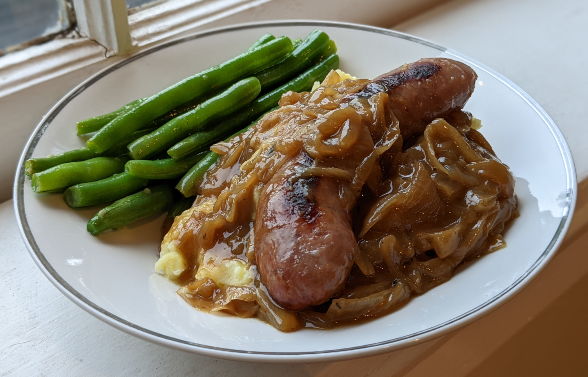

Bangers and Mash

Author: Kimberly Killebrew |
Cooked: July 30, 2022
Yields: 4 Servings | Prep Time: 30 Minutes | Cook Time: 30 Minutes
Ingredients
- 1 large yellow onion
- 2 Tbs unsalted butter
- 1 tsp sugar
- 1/4 tsp dried thyme
- 1 c. beef broth
- 1/4 tsp yellow mustard
- 1/2 tsp salt
- 1/8 tsp black pepper
- 1/2 tsp Worcestershire sauce
- 1/2 Tbs balsamic vinegar
- 1/2 Tbs cornstarch dissolved in 1/2 Tbs water
- 1 Tbs cold unsalted butter --------------------------
- 2 lbs Yukon Gold or other medium starch potatoes (~8 medium potatoes)
- 1/2 tsp salt
- 4 Tbs unsalted butter
- 1/2 - 1 c. milk (preferably whole milk)
- Salt, pepper, and garlic to taste --------------------------
- 4 large/8 small of preferred sausages
Onion Gravy
Mashed Potatoes
Directions
- Peel the onion, cut in half, and thinly slice.
- Melt butter in a saucepan over medium heat. Add onion and sugar and cook for about 30 minutes until caramelized (deep golden).
- Add thyme, beef broth, mustard, salt, pepper, and Worcestershire sauce, bring to boil, reduce heat and allow to simmer, covered, for 20 minutes.
- Add vinegar, and slowly whisk in cornstarch slurry. Continuously whisk until thickened, about two minutes.
- Add cold butter and whisk until dissolved.
- Add more salt, pepper, and mustard to taste. --------------------------
Onion Gravy
- Wash, peel, and cut potatoes into large, uniform chunks (~2 inches).
- Place potatoes in a pot of water with salt. Bring to a boil, lower heat, and cook for 15-20 minutes until they are just tender when pierced with a knife.
- Drain the potatoes and place them back into pot.
- Using a hand masher, mash the potatoes until there are no longer large lumps.
- Stir in butter and gradually add milk until you reach the desired consistency.
- Add salt, pepper, and garlic to taste. --------------------------
Mashed Potatoes
- While the potatoes are boiling, bake the sausages in the oven at 400°F for 20 minutes turning halfway through. They should get nicely browned on both sides.
- To plate, add mashed potatoes, sausages on top, and then cover with gravy.
Sausages
Additional Notes
- This is traditionally served with peas, but we're not huge fans, so we replaced with green beans! Adds a little color to the plate...
- When cooking with two, one person can make the gravy while the other preps the potatoes. Then while the potatoes cook, add the sausages to the oven. Doing it this way, everything was finished at about the same time.